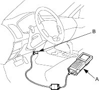
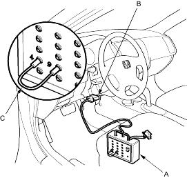

The troubleshooting flowchart procedures assume that the cause of the problem is still present and the ABS indicator is still on. Following the flowchart when the ABS indicator does not come on can result in incorrect diagnosis.
The connector illustrations show the female terminal connectors with a single outline and the male terminal connectors with a double outline.
- Question the customer about the conditions when the problem occurred and try to reproduce the same conditions for troubleshooting. Find out when the ABS indicator came on, such as during ABS control, after ABS control, when the vehicle was at a certain speed, etc.
- When the ABS indicator does not come on during the test-drive, but troubleshooting is done based on the DTC, check for loose connectors, poor terminal contact, etc., before you start troubleshooting.
- After troubleshooting, clear the DTC,and test-drive the vehicle. Make sure the ABS indicator does not come on.
How to Retrieve ABS DTCs
Honda PGM Tester Method:
- With the ignition switch OFF, connect the Honda PGM Tester (A) to the 16P Data Link Connector (DLC) (B) under the driver's side of the dashboard.

- Turn the ignition switch ON (II) and follow the prompts on the PGM Tester to display the DTC(s) on the screen. After determining the DTC, refer to the DTC Troubleshooting Index.
NOTE: See the Honda PGM Tester user's manual for specific instructions.
DLC Terminal Box Method:
- With the ignition switch OFF, connect the DLC terminal box (A) to the 16P Data Link Connector (DLC) (B) under the driver's side of the dashboard.

- Insert the plugs of the jumper wire (C) to No. 1 and No. 12 plug holes of the DLC terminal box, then push the switch.
- Turn the ignition switch ON (II) without pressing the brake pedal.
NOTE: If you press the brake pedal when turning the ignition switch ON (II), the system shifts to the DTC clearing mode.